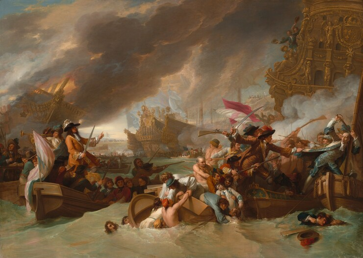
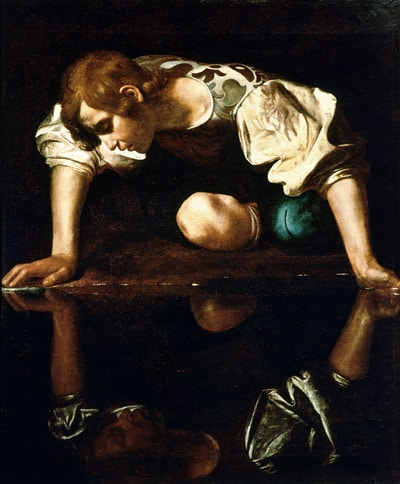
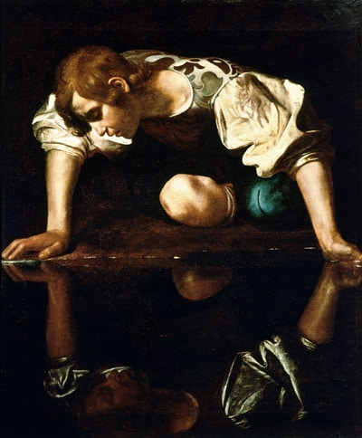

Ich Habe Genuge
by Johann Sebastian Bach
Ich habe genug,
Ich habe den Heiland, das Hoffen der Frommen,
Auf meine begierigen Arme genommen:
Ich habe genug!
Ich hab’ ihn erblickt,
Mein Glaube hat Jesum ans Herze gedrückt,
Nun wünsch ich, noch heute mit Freuden
Von hinnen zu scheiden.
Ich habe genug!
[Chorus]

 
